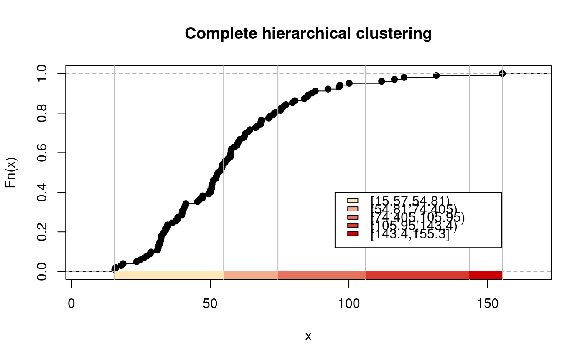
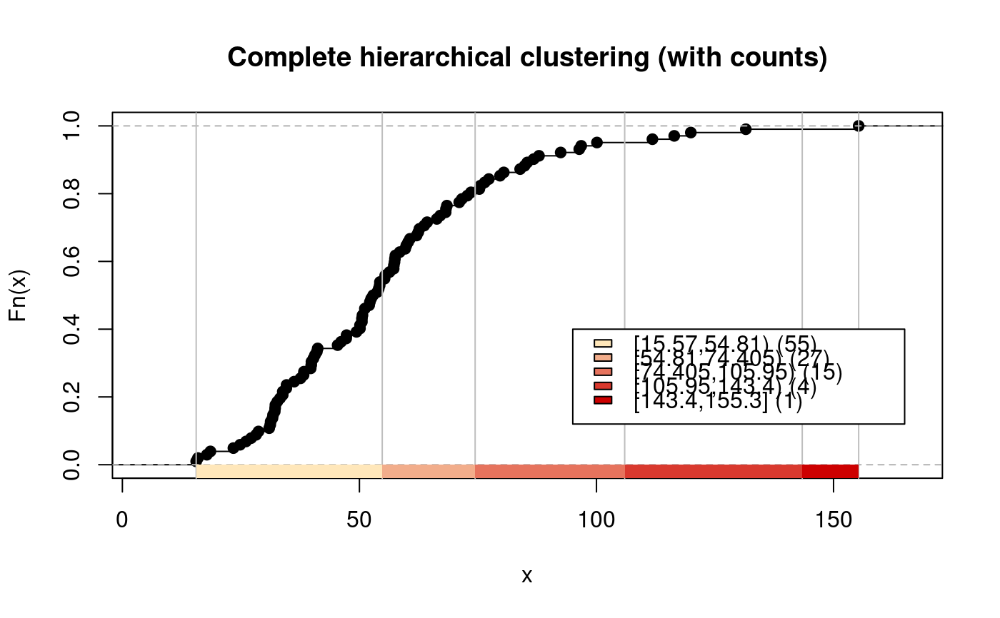

findColours.RdThis helper function is a wrapper for findCols to extract classes from a "classInterval" object and assign colours from a palette created by colorRampPalette from the two or more colours given in the pal argument. It also returns two attributes for use in constructing a legend.
findColours(clI, pal, under="under", over="over", between="-",
digits = getOption("digits"), cutlabels=TRUE)a "classIntervals" object
a character vector of at least two colour names; colorRampPalette is used internally to create the required number of colours
character string value for "under" in legend if cutlabels=FALSE
character string value for "over" in legend if cutlabels=FALSE
character string value for "between" in legend if cutlabels=FALSE
minimal number of significant digits in legend
use cut-style labels in legend
a character vector of colours with attributes: "table", a named frequency table; "palette", a character vector of colours corresponding to the specified breaks.
if (!require("spData", quietly=TRUE)) {
message("spData package needed for examples")
run <- FALSE
} else {
run <- TRUE
}
if (run) {
data(jenks71, package="spData")
mypal <- c("wheat1", "red3")
h5 <- classIntervals(jenks71$jenks71, n=5, style="hclust", method="complete")
print(findColours(h5, mypal))
}
#> [1] "#FFE7BA" "#E6735D" "#E6735D" "#F2AD8B" "#E6735D" "#E6735D" "#E6735D"
#> [8] "#E6735D" "#D9392E" "#CD0000" "#D9392E" "#D9392E" "#E6735D" "#E6735D"
#> [15] "#F2AD8B" "#E6735D" "#E6735D" "#E6735D" "#E6735D" "#D9392E" "#F2AD8B"
#> [22] "#E6735D" "#F2AD8B" "#F2AD8B" "#E6735D" "#F2AD8B" "#F2AD8B" "#F2AD8B"
#> [29] "#F2AD8B" "#E6735D" "#F2AD8B" "#FFE7BA" "#F2AD8B" "#F2AD8B" "#F2AD8B"
#> [36] "#F2AD8B" "#FFE7BA" "#FFE7BA" "#F2AD8B" "#F2AD8B" "#FFE7BA" "#F2AD8B"
#> [43] "#F2AD8B" "#FFE7BA" "#F2AD8B" "#F2AD8B" "#FFE7BA" "#F2AD8B" "#FFE7BA"
#> [50] "#FFE7BA" "#F2AD8B" "#F2AD8B" "#FFE7BA" "#F2AD8B" "#F2AD8B" "#FFE7BA"
#> [57] "#F2AD8B" "#F2AD8B" "#FFE7BA" "#FFE7BA" "#FFE7BA" "#FFE7BA" "#FFE7BA"
#> [64] "#FFE7BA" "#FFE7BA" "#FFE7BA" "#FFE7BA" "#FFE7BA" "#FFE7BA" "#FFE7BA"
#> [71] "#FFE7BA" "#FFE7BA" "#FFE7BA" "#FFE7BA" "#FFE7BA" "#FFE7BA" "#FFE7BA"
#> [78] "#FFE7BA" "#FFE7BA" "#FFE7BA" "#FFE7BA" "#FFE7BA" "#FFE7BA" "#FFE7BA"
#> [85] "#FFE7BA" "#FFE7BA" "#FFE7BA" "#FFE7BA" "#FFE7BA" "#FFE7BA" "#FFE7BA"
#> [92] "#FFE7BA" "#FFE7BA" "#FFE7BA" "#FFE7BA" "#FFE7BA" "#FFE7BA" "#FFE7BA"
#> [99] "#FFE7BA" "#FFE7BA" "#FFE7BA" "#FFE7BA"
#> attr(,"palette")
#> [1] "#FFE7BA" "#F2AD8B" "#E6735D" "#D9392E" "#CD0000"
#> attr(,"table")
#> [15.57,54.81) [54.81,74.405) [74.405,105.95) [105.95,143.4) [143.4,155.3]
#> 55 27 15 4 1
if (run) {
print(findColours(getHclustClassIntervals(h5, k=7), mypal))
}
#> [1] "#F6C09B" "#E6735D" "#E6735D" "#EE9A7C" "#E6735D" "#E6735D" "#E6735D"
#> [8] "#DD4D3E" "#D5261F" "#CD0000" "#D5261F" "#D5261F" "#DD4D3E" "#E6735D"
#> [15] "#EE9A7C" "#DD4D3E" "#E6735D" "#E6735D" "#E6735D" "#D5261F" "#EE9A7C"
#> [22] "#E6735D" "#EE9A7C" "#EE9A7C" "#E6735D" "#EE9A7C" "#EE9A7C" "#EE9A7C"
#> [29] "#EE9A7C" "#DD4D3E" "#EE9A7C" "#F6C09B" "#EE9A7C" "#EE9A7C" "#EE9A7C"
#> [36] "#EE9A7C" "#F6C09B" "#F6C09B" "#EE9A7C" "#EE9A7C" "#F6C09B" "#EE9A7C"
#> [43] "#EE9A7C" "#F6C09B" "#EE9A7C" "#EE9A7C" "#F6C09B" "#EE9A7C" "#F6C09B"
#> [50] "#F6C09B" "#EE9A7C" "#EE9A7C" "#F6C09B" "#EE9A7C" "#EE9A7C" "#F6C09B"
#> [57] "#EE9A7C" "#EE9A7C" "#F6C09B" "#F6C09B" "#F6C09B" "#F6C09B" "#F6C09B"
#> [64] "#F6C09B" "#F6C09B" "#F6C09B" "#F6C09B" "#F6C09B" "#F6C09B" "#F6C09B"
#> [71] "#F6C09B" "#F6C09B" "#F6C09B" "#F6C09B" "#F6C09B" "#F6C09B" "#F6C09B"
#> [78] "#F6C09B" "#F6C09B" "#F6C09B" "#F6C09B" "#F6C09B" "#F6C09B" "#F6C09B"
#> [85] "#F6C09B" "#F6C09B" "#F6C09B" "#FFE7BA" "#F6C09B" "#FFE7BA" "#FFE7BA"
#> [92] "#F6C09B" "#F6C09B" "#FFE7BA" "#FFE7BA" "#FFE7BA" "#F6C09B" "#FFE7BA"
#> [99] "#FFE7BA" "#FFE7BA" "#FFE7BA" "#F6C09B"
#> attr(,"palette")
#> [1] "#FFE7BA" "#F6C09B" "#EE9A7C" "#E6735D" "#DD4D3E" "#D5261F" "#CD0000"
#> attr(,"table")
#> [15.57,29.84) [29.84,54.81) [54.81,74.405) [74.405,90.16) [90.16,105.95)
#> 10 45 27 11 4
#> [105.95,143.4) [143.4,155.3]
#> 4 1
if (run) {
h5Colours <- findColours(h5, mypal)
plot(h5, mypal, main="Complete hierarchical clustering")
legend(c(95, 155), c(0.12, 0.4), fill=attr(h5Colours, "palette"),
legend=names(attr(h5Colours, "table")), bg="white")
}

if (run) {
h5tab <- attr(h5Colours, "table")
legtext <- paste(names(h5tab), " (", h5tab, ")", sep="")
plot(h5, mypal, main="Complete hierarchical clustering (with counts)")
legend(c(95, 165), c(0.12, 0.4), fill=attr(h5Colours, "palette"),
legend=legtext, bg="white")
}
